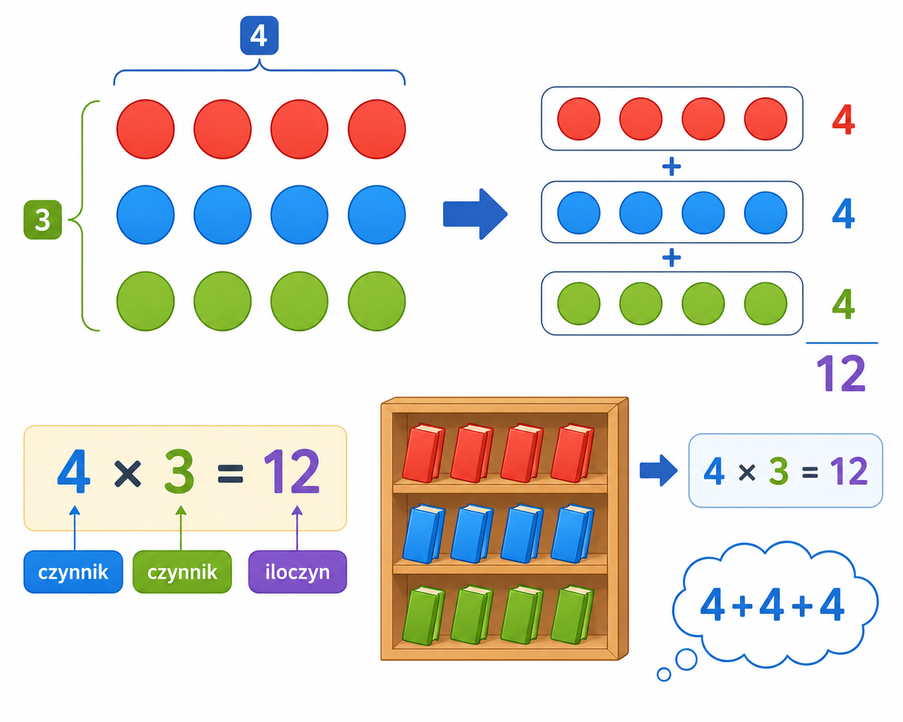

1
mnożenie
множення

📘 Co to jest? Що це?
Mnożenie to szybkie dodawanie tej samej liczby. 4×3 znaczy: 4+4+4.
Множення — швидке додавання того самого числа. 4×3 означає: 4+4+4.
⭐ Zapamiętaj Запам'ятай
4 × 3 = 12
Запис: множник × множник = добуток. Спочатку зрозумій сенс, потім вчи напам'ять.
⚠ Nie pomyl Не плутай
- × = dodawanie tej samej3×4 = 3+3+3+3
- iloczyn = wynik≠ dzielenie
✅ Przykłady Приклади
- 4 × 3 = 12
- 7 · 6 = 42
- tabliczka ×
- 3 rzędy po 5
- 2·2·2 = 8